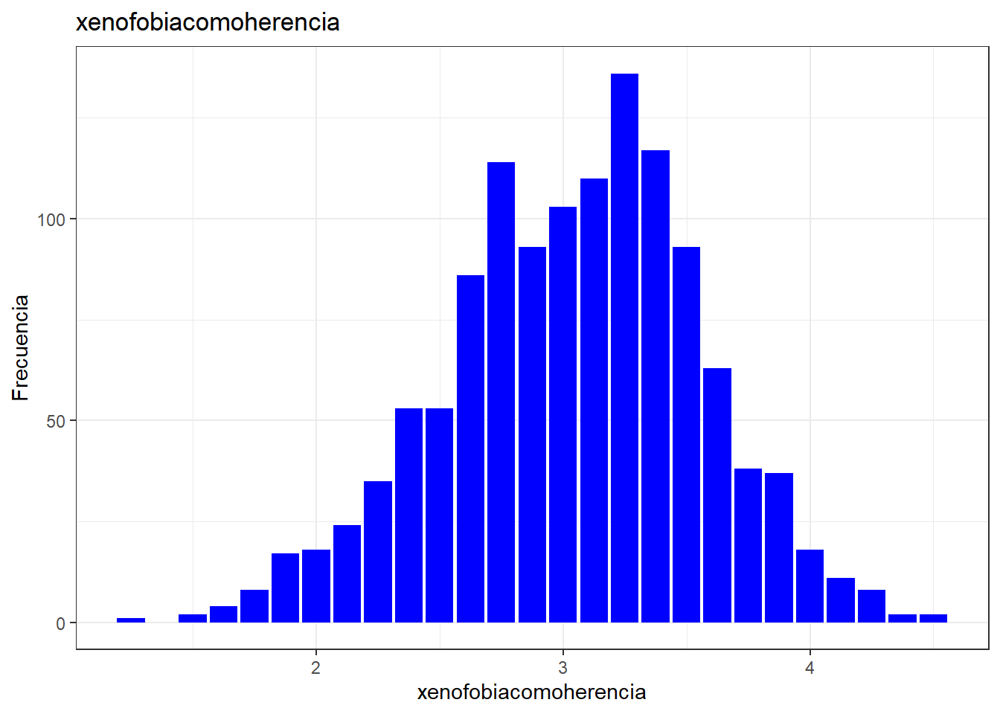
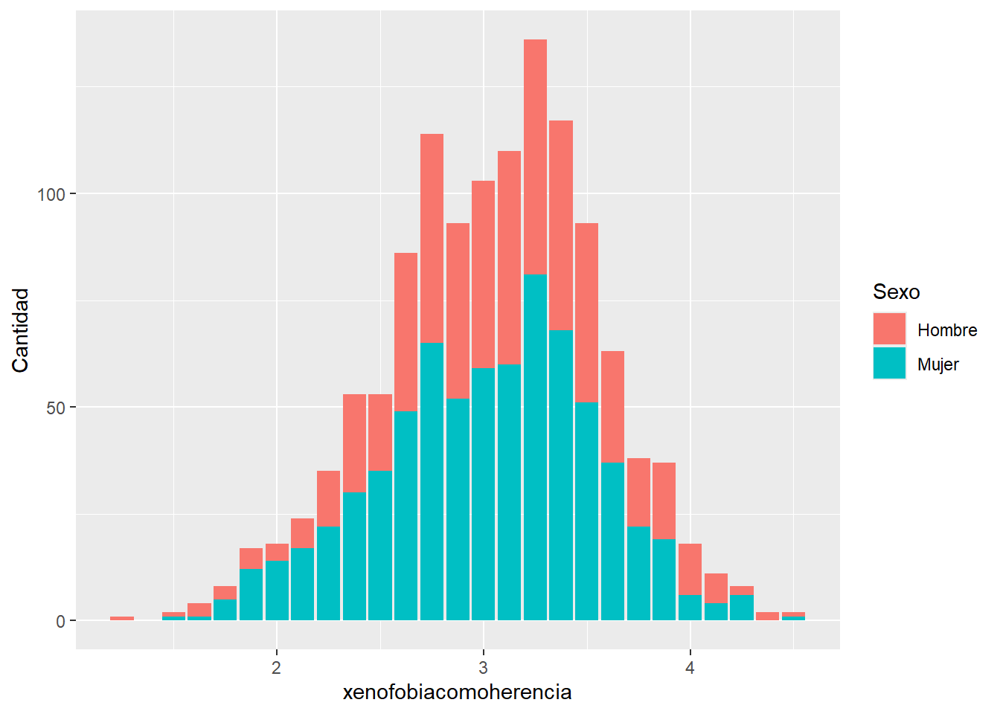

La herencia de la colonización en la sociedad chilena actual
Introduccion
Desde hace mucho tiempo, las sociedades se han estructurado a partir de patrones culturales para poder regular y controlar, a base normas y tradiciones que han sido replicadas a lo largo del tiempo. Esto bajo una perspectiva de género se puede analizar en como el patriarcado a infundido en una construcción de un modelo opresor altamente sexista y racista. “Una de las formas en que se ha evidenciado este trasfondo es lo que hemos aludido como sexualización de la mujer migrante, específicamente la mujer Negra. Con esta idea de sexualización estamos aludiendo al proceso mediante el cual se construyen representaciones y se generan prácticas que adscriben cierto tipo de actitud y comportamiento frente a la sexualidad a determinados sujetos —marcados en términos de subjetivación sexo género mujeres, homosexuales, transexuales…Ȍ y racializados—, actitudes y conductas que atentarían contra una moralidad social imaginada” (2016 , p-.198)
Esto altamente potenciado y heredado por una herencia colonial que a pesar de haber existido hace mucho tiempo, esta se sigue replicando en la sexualización y denigración del cuerpo femenino afrocaribeño, el cual se sigue viendo como un objeto de conquista y colonización al igual como los fueron las tierras latinoamericanas con la conquista española. “La mujer de piel oscura ha sido silenciada, burlada, enjaulada, atada a la servidumbre con el matrimonio, apaleada a lo largo de 300 años, esterilizada y castrada en el siglo XX. Durante 300 años ha sido una esclava, mano de obra barata, colonizada por los españoles, los anglos, por su propio pueblo -y en Mesoamérica su destino bajo los patriarcas indios no se ha librado de ser herido-. Durante 300 años fue invisible, no fue escuchada, muchas veces deseó hablar, actuar, protestar.” (2007 , p.97)
Como se puede apreciar, la base de datos contiene una amplia variedad de variables que pueden ser analizadas estadísticamente. Para investigar la xenofobia como una herencia del colonialismo, será necesario agrupar ciertas variables y crear una nueva base de datos con aquellas que nos interesan. El Estudio Longitudinal Social de Chile (Ola1 2016) ofrece diversas variables que nos permiten explorar la confianza interpersonal, la participación cívica y comunitaria, la percepción de pertenencia social, la tolerancia a la diversidad y la seguridad, todas ellas relevantes para este estudio.
Al mismo tiempo se actualizan dinámicas de violencia contra migrantes, estos tienden a prevalezer en el tiempo y acrecentarse a lo largo de los años (2017 , p250)
En consecuencia se plantea como hipotesis que la xenofobia como hernecia del colonialismo varia segun la percepcion positiva frente a migrantes peruanos, el sexo y la edad. Las variables existentes dentro de la base de datos son la confianza entre vecinos, la integracion en el barrio, la seguridad en el barrio, la conectividad, la evaluación del barrio, la satisfacción con la democracia, y finalmente la confianza en el gobierno. Pero solo se utilizaran las primeras 3 anteriormente mencionadas
seleccion de las variables
proc_base <- elsoc_2016 %>%select(m01, #Nivel educacional m0_sexo, #Sexo m0_edad, #Edad t01, #Confianza en vecinos t02_02, #Integracion en el barrio t06_01, #Seguridad en el barrio t06_02, #Conectividad t08, #Evaluacion del barrio r07, #Contacto positivo con migrantes peruanos c01, #Satisfaccion con la democracia c05_01) #Confianza en el gobiernoproc_base <-na.omit(proc_base)dim(proc_base)
Como podemos observar, la mayoría de las variables en la base de datos tienen valores que van del 1 al 5, con excepción de las variables de nivel educativo, sexo y edad. Estas variables se consideran ordinales, lo que significa que utilizan números para establecer un orden jerárquico. Al analizar los datos, notamos que la mayor frecuencia de respuestas se encuentra en los valores 3 y 4, representando entre un 10% y un 61% de las respuestas. Esto indica una evaluación positiva en términos de confianza, integración, seguridad y evaluación de las comunidades sociales.
Sin embargo, hay dos variables que difieren en sus resultados, específicamente la satisfacción con la democracia y la confianza en el gobierno. En estas variables, la mayor frecuencia de respuestas se encuentra en las categorías 1, 2 y 3, lo que sugiere una falta de confianza en el gobierno. Según el manual de variables del Estudio Longitudinal Social de Chile, la categoría 1 corresponde a “muy poco”. Esto significa que, en cuanto a la satisfacción con la democracia y la confianza en el gobierno, un 42,1% y un 47,8% de la muestra tiene muy poca o ninguna confianza en el gobierno y/o no está satisfecha con la democracia.
Si bien las categorias estan agrupadas como promedio, con valores entre 1 y 5 pero que contiene valores como 1,5 2,3 3,5 etc. Entonces no se podrian volver a agrupar en categorías. En consecuencia de dejarian estos solo como forma numerica antes de asignarle nombres a las categorías correspondientes
Para la creacion de la variable xenofobia como herencia se tomaran las siguientes variables: 1)contacto positivo con migrantes peruanos con 1 ,2 como “No amistosa”, 3 como “Ni amistosa ni poco amistosa”, y 4,5 como “Muy amistosa”), agrupando asi 2 categorias de respuesta en una misma para ver la presencia o no de contacto negativo sin el grado de este mismo para poder ver la presencia mas concreta de la xenofobia posiblemente existente que plantea la hipotesis
Warning: Removed 78 rows containing non-finite outside the scale range
(`stat_count()`).

Estos datos muestran la distribución de respuestas sobre el contacto positivo con peruanos en una muestra. Aquí está la interpretación de cada columna:
Value: Categorías que indican el nivel de amistad con peruanos. N: Número total de casos en cada categoría. Raw %: Porcentaje bruto de casos en cada categoría respecto al total de la muestra. Valid %: Porcentaje de casos válidos en cada categoría respecto al total de casos válidos en la muestra. Excluye los casos con datos faltantes o inválidos. Cum. %: Porcentaje acumulado hasta esa categoría en particular. Por ejemplo, en la categoría “No amistosa”, hay 138 casos, lo que representa el 10.42% del total de la muestra y el 10.59% de los casos válidos. La categoría “Ni amistosa ni poco amistosa” tiene 350 casos, que corresponden al 26.44% del total de la muestra y al 26.86% de los casos válidos. La categoría “Muy amistosa” tiene 815 casos, representando el 61.56% del total de la muestra y el 62.55% de los casos válidos. Finalmente, hay 21 casos con datos faltantes en esta variable, lo que equivale al 1.59% del total de la muestra. —
#se continua con la variable sexo
frq(proc_base$Sexo)
Sexo (x) <numeric>
# total N=1324 valid N=1324 mean=1.57 sd=0.49
Value | N | Raw % | Valid % | Cum. %
--------------------------------------
1 | 566 | 42.75 | 42.75 | 42.75
2 | 758 | 57.25 | 57.25 | 100.00
<NA> | 0 | 0.00 | <NA> | <NA>
Warning: Removed 78 rows containing non-finite outside the scale range
(`stat_count()`).

Se ve como la variacion de grados de relacion amistosa con peruano como elemento tangible de la xenofobia como herencia esta ditribuido tando para el lado de no amistosa como al de amistosa, pero sobre todo concentrando se en la indiferencia de ni amistosa ni no amistosa. La unica variedad que se puede ver es que son mas hombres los que estan en casos extemos mientras que las mujeres toman mayoria en el caso central
#se grafica la comparacion de la variable xenofobiacomo herencia por sexo
summary(proc_base$edad)
Length Class Mode
0 NULL NULL
get_label(proc_base$Edad)
[1] "Edad"
proc_base <-as.data.frame(proc_base)proc_base <- proc_base %>%mutate(edad_groups =case_when(Edad >=16& Edad<=25~"Entre 16 y 25 años", Edad >=26& Edad<=39~"Entre 26 y 39 años", Edad >=40& Edad<=65~"Entre 40 y 65 años", Edad >65~"Más de 65 años"))table(proc_base$edad_groups)
Entre 16 y 25 años Entre 26 y 39 años Entre 40 y 65 años Más de 65 años
169 399 658 98
Cacterísticas demográficas como la edad y el sexo en esta muestra específica. Es importante tener en cuenta que estos resultados se basan en los datos disponibles y pueden variar en función de otros factores no considerados en este análisis. Además, es importante considerar que la xenofobia puede ser difícil de medir con precisión, ya que algunas personas pueden no ser conscientes de sus propios prejuicios o pueden no querer admitirlos. Además, existe la posibilidad de que las respuestas estén influenciadas por lo que se percibe como moralmente correcto o socialmente aceptable, lo que podría afectar la precisión de los resultados. Por lo tanto, es necesario interpretar estos datos con precaución y considerar otros factores que puedan influir en las actitudes hacia la xenofobia. Por tanto se rechaza la hipotesis
References
Gonzalo Guzmán Torres, and Gonzalo Guzmán Torres. 2017. “RESEÑA: MARÍA EMILIA TIJOUX (EDITORA). RACISMO EN CHILE. LA PIEL COMO MARCA DE LA INMIGRACIÓN.” 15 (26): 167–80.
María Fernanda Stang, María Fernanda Stang, Carolina Stefoni, and Carolina Stefoni. 2016. “La Microfísica de Las Fronteras. Criminalización, Racialización y Expulsabilidad de Los Migrantes Colombianos En Antofagasta, Chile.”Astrolabio, no. 17 (December): 42–80. https://doi.org/10.55441/1668.7515.n17.15781.
Ochy Curiel, Ochy Curiel, and Ochy Curiel. 2007. “Crítica Poscolonial Desde Las Prácticas Políticas Del Feminismo Antirracista.”Nómadas, no. 26 (January): 92–101. https://doi.org/10.2307/j.ctv253f4j3.10.